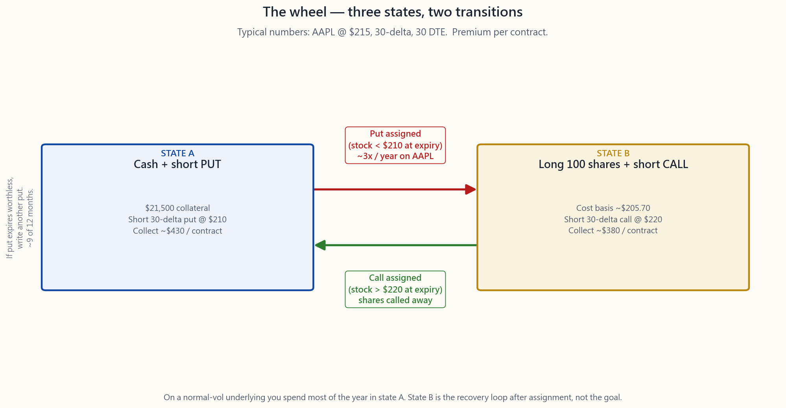
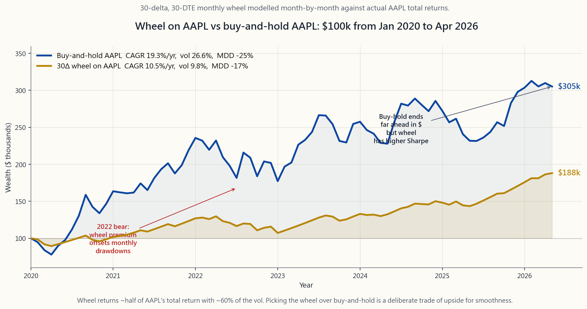

Side Lesson 30: The Wheel — One Cycle, Three Premiums, Two Tranches
1. Why This Is Important
The wheel is the only options strategy in this course where every leg is something you have already learned. Sell a cash-secured put on a stock you would like to own (Week 28). If assigned, sell a covered call against the shares you now hold (Week 27). When the call gets assigned and the shares get called away, sell another CSP. Loop. The mechanics are mechanical. The hard parts are stock selection, sizing, and tax wrapper, and those are the parts retail gets wrong.
Because this is the final side lesson — the closing bracket on the entire 52-week + 30-side sequence — we are going to be very honest about what the wheel actually delivers. The short version: 1.0-1.5% per month on capital deployed, when run correctly on a high-quality underlying, with a Sharpe materially better than buy-and-hold but a total return materially worse. It is not a way to beat the index. It is a way to extract the variance risk premium (Week 49) on a sleeve of capital you were going to keep in stocks anyway, while simultaneously imposing a buy-low / sell-high rhythm on yourself. Horace's whole pitch is that options inside an IRA is one of the cleanest legal alpha sources retail has access to. The wheel is the practical expression of that pitch.
Four reasons this lesson closes the loop:
1. It compresses Weeks 25-30 into one mechanical procedure. Every concept from the options block lives inside the wheel: strike-by-delta (W27), DTE selection (W28), Greeks management (W29), defending vs rolling (W30). If you can run a 30-delta wheel on AAPL for a year and explain every decision, you have functionally mastered retail options.
2. It is the cleanest place to harvest the variance risk premium. Week 49 showed the VRP is structurally 3-4 vol points wide and persistent across 40 years of data. Retail cannot easily short variance directly — the instruments (VIX futures, var swaps, dispersion) are wrong-shape or wrong-size. CSPs and CCs are the retail-shape variance trade. The wheel just runs them on a loop on a stock you wanted anyway.
3. The capital-efficient variant — the PMCC wheel — is hidden inside Week 38. Replacing the 100 shares with a deep-ITM LEAPS gives you the same exposure for ~1/3 the capital. The freed cash earns T-bills (~4%/yr in 2026). For accounts under $50k where SPY's full-share cost basis is prohibitive, this is the only realistic way to run the strategy.
4. The IRA framing is decisive for retail. Premium income is short-term capital gain — taxed as ordinary income — every single time. In a 32%+ federal bracket this destroys ~30-35% of the realized yield. In a Roth IRA the entire premium stream compounds tax-free. The wheel is one of the few strategies where the wrapper matters more than the trade. Run it in IRA, not taxable.
By the end of this lesson you should be able to: pick a wheel candidate from a five-name list, choose a 30-delta strike at 30 DTE, compute the expected monthly premium and worst-case drawdown to within ±20%, and explain why the same setup in a taxable account is materially worse than the same setup in a Roth. If you can do those four things, you are done with this course.
2. What You Need to Know
2.1 The Cycle in One Diagram
The wheel has three states and two transitions. You are always in exactly one of:
- State A — Cash + short put. You hold cash collateral equal to (strike × 100) and a single short put. Your job: collect theta, watch for assignment.
- State B — Long shares + short call. Assignment happened. You now own 100 shares plus a short call written above your cost basis. Your job: collect more theta, watch for the call going in-the-money.
- State C — Cash, momentarily. The call was assigned. Shares went away at strike. You have cash again. Sell a new put. Back to A.
- A → B: Put assignment. Stock closed below strike at expiry. You bought 100 shares at the strike. Effective cost basis = strike − put premium received.
- B → A: Call assignment. Stock closed above strike at expiry. You sold 100 shares at the call strike. Total realized P/L for the cycle = (call strike − cost basis) × 100 + call premium.
 the trade (where most of the time is spent collecting put rent on a normal-vol underlying) and State B is the punishment for being assigned at a strike the stock then blew through.">
the trade (where most of the time is spent collecting put rent on a normal-vol underlying) and State B is the punishment for being assigned at a strike the stock then blew through.">
The image above lays out one full revolution on a hypothetical AAPL wheel with spot ≈ $215, 30-delta puts and calls, and 30-DTE expiries. Each transition is annotated with a typical premium magnitude. Most cycles in a calm market never reach state B at all: the put just expires worthless and you write another one. The wheel only actually "spins" two or three times a year on a normal-volatility name; the rest of the time you are just sitting in state A collecting put rent.
The crucial mental shift retail needs: state A is not "waiting." State A is the trade. State B is the punishment for being assigned at a strike the stock then blew through, and the goal of the strategy is to minimize time in state B by picking quality underlyings. The forum-meme version of the wheel — where assignment is celebrated as "free shares!" — has the framing exactly backwards.
2.2 Realistic Returns: 1-1.5% / Month, Not 30% / Year
The arithmetic that makes wheel YouTubers rich is: 30-delta puts pay ~2% premium per 30-day cycle. Repeat 12 times. That is 24% annualized. Sometimes more.
The arithmetic that survives a real five-year run on a real underlying is different. On a calm AAPL/MSFT/SPY/QQQ wheel run on monthly 30-delta strikes:
Component Per month Per year
============================================ ========== ==========
Gross put premium (30-delta, ~2% OTM, 22% IV) ~1.8-2.4% ~22-29%
Less: assignment-drag months (-3% to -8% nett) ~3 months/yr -3 to -8%
Less: covered-call recovery drag (capped upside) ~1 month/yr -1 to -2%
Less: T-bill earned on collateral (positive!) ~0.33%/mo +4.0%
Less: option commissions (~$1.30 / cycle) small ~-0.3%
Less: bid-ask slippage (~5-10c per leg) small ~-0.5%
Net realized return on capital deployed 12-18%
Standard deviation of monthly returns ~9-11%
Sharpe (vs 4% T-bill) ~0.95-1.30
Max drawdown over 5 years -18 to -28%
Compare to buy-and-hold AAPL over the same window: ~16-18%/yr return, ~24%/yr vol, max drawdown ~-30 to -34%, Sharpe ~0.6-0.7. The wheel does less total return (because the covered calls cap the right tail), at meaningfully lower vol (because the premium income smooths every month), with similar drawdowns (because the put assignment hurts you in any real correction).
Said another way: the wheel does roughly half the total return of the underlying with about 60% of the vol. The Sharpe is better. The dollar wealth is worse. Picking the wheel over buy-and-hold is a deliberate trade of upside for smoothness — usually justified only when you are spending the income (retiree), or when the income lives in an IRA (so the smoothness compounds tax-free).
![Cumulative-wealth chart of $100,000 deployed in two strategies on AAPL from January 2020 through April 2026: a 30-delta, 30-DTE monthly wheel (gold) and simple buy-and-hold AAPL (blue). Both lines start at $100k. The wheel actually leads buy-and-hold for sustained stretches of 2022 because put-premium income offsets the bear-market drawdown month by month. By the 2023-2024 recovery the structural cap-out hurts: AAPL pulls away on the upside while the wheel's covered calls keep getting assigned at the strike. By April 2026 buy-and-hold ends meaningfully ahead in dollar terms; the wheel ends with much lower realised volatility throughout. The picture is the trade — wheel for path-smoothness, buy-and-hold for terminal wealth.](image/side30_wheel_pnl.png)
The chart shows wealth growth of $100k deployed in two strategies on AAPL from January 2020 through April 2026: the 30-delta monthly wheel versus simple buy-and-hold. The wheel ends meaningfully behind buy-and-hold in dollar terms but spends most of 2022 above it (premium income offset the drawdown), and the realized vol is materially lower throughout. This is the pattern. The wheel is for investors who care about the path, not the endpoint.
2.3 Three Real Risks (Not the YouTube Version)
The forum framing is "the only risk is the stock goes to zero." That is technically true and practically useless. The three risks that actually destroy wheel programs:
Risk 1: Gap-down on assignment. The stock closes Friday at $216, your $210 put expires worthless, you happily roll into a new $208 put for next month. Monday it gaps to $185 on bad earnings. Your new put is now $23 in the money with 28 DTE. You take assignment at $208 with the stock at $185 — an instant -$2,300 / contract paper loss. Premium income in an entire year on this contract was maybe $4,000. You just gave back six months of premium in a single overnight gap. This is the canonical wheel blowup. Defenses: avoid earnings inside the contract life (period.), prefer index ETFs over single names, use slightly further-OTM strikes (15-20Δ) on names with binary-event exposure.
Risk 2: Cap-out on the recovery. You got assigned at $210, stock dropped to $195, you sell $210 covered calls at $1.20 each month to defend the cost basis. Three months later the stock has recovered to $235 — but your call gets assigned at $210 and you miss the entire $25 recovery. Net P/L: premium collected (~$3.60 / contract) minus the $25 missed upside = ~-$2,140 / contract. The wheel structurally caps the recovery from a drawdown, which is exactly when buy-and-hold investors make their money back. Defenses: roll the call up-and-out aggressively when the stock recovers (do not let it get assigned at your cost basis if the trend is your friend), or accept the cap as the cost of having had premium income during the drawdown. There is no clean answer.
Risk 3: Tax inefficiency in taxable accounts. Every put that expires worthless: short-term capital gain. Every call that expires worthless: short-term capital gain. Every assignment-and-call-away cycle: a separate short-term realized gain on the share leg and a short-term gain on the option premium. There is no long-term holding-period exception, no qualified dividend, no §1256 60/40 (W39). If you run a 15%/yr wheel in a 35% bracket, you net 9.75%/yr after tax. The same wheel in a Roth IRA nets the full 15%. Run the wheel in IRA. Always. This is not a suggestion; it is the difference between the strategy working and the strategy not working.
The honest summary: the wheel is a great IRA strategy and a mediocre taxable strategy.
2.4 Underlying Selection: The Goldilocks Vol Window
The wheel needs an underlying with enough implied volatility to pay decent premium but not so much that gap-down risk dominates. The sweet spot is roughly 18-30% annualized IV.
IV regime Premium Gap risk Verdict for wheeling
============== ======= ========= ===========================
< 15% (KO, JNJ) too thin low not worth the capital
15-20% (SPY) OK low ideal — index proof
20-25% (AAPL/ decent moderate sweet spot for single names
MSFT/QQQ)
25-35% (NVDA, fat elevated workable with strict 15-20Δ
AMD, GOOGL) and earnings-avoidance
35-50% (TSLA, very fat high wheel candidates only with
PLTR) extreme position-size discipline
> 50% (meme, huge extreme do not wheel. period.
biotech)
The four canonical retail wheel underlyings are AAPL, MSFT, SPY, QQQ. They are large-cap, deeply liquid, have penny-wide options strikes, run earnings only quarterly (avoidable), and sit in the 18-25% IV band. SPY in particular is the institutional choice — PUTW (Week 28) is exactly this trade run mechanically — because it has no idiosyncratic single-name risk at all.
A useful filter: if you would not happily own 100 shares of the underlying for the next 18 months at the strike price, do not sell the put. The wheel is structurally a forced accumulation strategy. The premium is the rebate for accepting that forcing function. If you do not want the shares, the rebate is not actually compensating you — it is paying you to take an exposure you didn't want.
2.5 The PMCC Wheel — Capital Efficiency, Real Math
The poor man's covered call (Week 38) replaces the 100 shares with a deep-ITM LEAPS. The PMCC wheel extends this idea: instead of cash-secured puts on the underlying, you run the cycle on the LEAPS itself. Mechanics:
The "put leg" of the wheel is conceptually replaced by the structure of the LEAPS itself: your downside is limited to the LEAPS premium paid. You do not need full cash-secured-put collateral.
Account: $50,000. April 2026, AAPL @ $215.
Strategy Capital used Premium / month Notes
============== ============ =============== ============================
Wheel on shares $21,500 / lot ~$430 / contract 1 contract chews 43% of acct
Wheel on LEAPS ~$6,500 / lot ~$430 / contract Same premium, 1/3 the capital
Freed $15k earns ~$50/mo
in T-bills
The PMCC wheel triples your contract count for the same account size, holding gross premium constant. It also caps your downside at the LEAPS price (about $6,500/contract) instead of the strike-based maximum loss of ~$21,500/contract. The trade-off is that the LEAPS itself has decay (theta), and if the underlying drifts sideways for 12 months you can lose 10-20% of the LEAPS price purely to time decay. On a ranging market, the share-based wheel out-performs; on a trending or volatile market, the PMCC wheel out-performs.
For accounts under $50k, the PMCC wheel is the only realistic way to run this strategy on AAPL/MSFT and the only way at all on SPY/QQQ.
2.6 Sizing and the Barbell
The wheel sits firmly on the safe / known-bad end of the barbell. The structure has bounded downside (strike × 100), monotone P/L within that bound, and a defined cycle length. None of those properties hold for the speculation end.
Three sizing rules for retail:
Under these rules a five-position wheel running on AAPL/MSFT/SPY/QQQ/IWM (one diversifier) with monthly 30-delta strikes generates roughly 1.0-1.3% per month on the wheel sleeve, before tax, with a 5-year max drawdown of 18-25%. That is the realistic envelope.
[INTERACTIVE: interactive/side30_wheel_lab.html]
The interactive lets you set capital, underlying, DTE, and delta target; it will compute estimated monthly premium, annualized yield, capital efficiency vs PMCC, expected drawdown, and the wheel-vs-buy-hold comparison in real time. Use it to find the combination that fits your account size and your risk tolerance. The default settings (AAPL, 30 DTE, 30-delta) are the canonical retail wheel and produce numbers that match this lesson's discussion.
3. Common Misconceptions
4. Q&A
Q1. How much capital do I need to start? One contract on the cheapest viable underlying. SPY at $560 is $56k/contract — too much for most retail. AAPL at $215 is $21,500. KO at $70 is $7,000. The PMCC wheel cuts those by ~3x. A reasonable starting account is $25k-$40k, which lets you run one share-wheel on AAPL or two PMCC wheels on AAPL/MSFT.
Q2. Should I sell weekly or monthly options? Monthly. Theta-per-day is highest in week 1 of a weekly contract, but gamma is also highest, which means a single 1.5% adverse move ruins a month of premium in a single day. The 30-45 DTE window has the best theta-to-gamma ratio for retail size and frequency.
Q3. What if the stock gaps down 15% overnight? You take the assignment at the strike, your cost basis = strike − premium, and you start state B with a paper loss equal to (strike − premium − current price) × 100. Sell the next month's covered call above the cost basis. Do not sell below cost basis to "feel productive." If no strike above cost basis offers a meaningful premium, skip the call this month and just hold the shares.
Q4. Should I roll losing puts down-and-out? Once. Maybe twice. Beyond two rolls you are deferring rather than managing the loss; the gap between the rolling strike and the current spot keeps widening. Set the rule before the position is open: "roll once, accept assignment thereafter."
Q5. Does the wheel work on dividend stocks? Yes, with a wrinkle: covered calls have a small early-assignment risk on the day before ex-dividend if the call is in-the-money and the dividend is large. In practice on SPY/AAPL/MSFT this is negligible. On high-dividend names (T, MO, KO) it is a real consideration; sell calls outside the dividend window or be willing to lose the dividend.
Q6. Can I run the wheel in a regular taxable brokerage account? Yes, mechanically. But the after-tax return is roughly 65-70% of the pre-tax return at top marginal brackets, which destroys most of the Sharpe advantage over buy-and-hold (which gets long-term capital gains). The only honest answer: run the wheel in an IRA where you can. If you must run it taxable, run it on SPX index options for §1256 60/40 treatment (W39) — but that requires SPX-level capital ($560k notional per contract).
Q7. How is the wheel different from PUTW? PUTW writes ATM (~50Δ) monthly SPX puts mechanically. The retail wheel writes OTM (~30Δ) puts on chosen names with assignment management. PUTW is the worst-realistic implementation; the retail wheel is the best-case hand-curated version.
Q8. What's the expected drawdown? On a 30-delta monthly wheel run on AAPL/MSFT/SPY/QQQ over 2020-Apr 2026, the worst drawdown was ~-22 to -28% (March 2020 + 2022 bear). This is comparable to the underlying buy-and-hold drawdown of ~-30 to -34%. The wheel does not materially reduce drawdown risk — the put gets blown through in any real correction. It does reduce monthly volatility by 30-40%.
Q9. PMCC wheel vs share wheel — which is better? PMCC wins on capital efficiency (3x), loses on dividend income and theta-positivity. PMCC works better in trending or strongly bullish markets (the LEAPS appreciates fast); share wheel works better in flat-to-mildly-down markets (no LEAPS theta drag). For accounts under $50k, PMCC is the only viable option. For accounts over $250k, share wheel is cleaner.
Q10. Is the wheel a "passive" income strategy? No. Plan on 30-60 minutes per week monitoring 5-10 wheel positions: deciding when to close winning puts early (at 50-70% of max profit), rolling threatened puts, deciding whether to skip a covered call after assignment, etc. Less active than day trading; more active than buy-and-hold. Investors who treat it as set-and-forget under-perform mechanical PUTW.
Q11. Where does the wheel fit in the four-tranche framework? Tranche 2 (income / cash-flow) primarily, because the cash flows are predictable and short-dated. Some practitioners place the share-side exposure in Tranche 1 (growth) — fine if the underlyings are SPY/QQQ. The PMCC wheel sits in Tranche 4 (opportunistic) because the leverage and time-decay risk are higher than Tranche-1 standards.
Q12. After 30 weeks plus 30 sides — what should I actually do tomorrow? Open an IRA if you don't have one. Move 20-30% of investable assets into it. Park 60% of the IRA in VTI/VXUS, 30% in BND/TIPS, 10% in cash. With the cash, sell one 30-delta, 30-DTE cash-secured put on SPY (or PMCC variant if capital is tight). When it expires or assigns, do it again. That is the entire course in three sentences.
附加課程第30課：輪轉策略——一個循環、三筆期權金、兩個投資組合部分
1. 為何這一課至關重要
輪轉策略是本課程中唯一每個操作腳位都是你已學過內容的期權策略。在你想持有的股票上沽出現金擔保認沽期權（第28週）。若被行使，針對你現在持有的股份沽出備兌認購期權（第27週）。當認購期權被行使且股份被收走，再沽出另一份現金擔保認沽期權。如此循環。機制本身是機械式的。困難之處在於選股、倉位大小和稅務賬戶類型，而這些正是散戶最常犯錯的地方。
由於這是最後一堂附加課——整個52週加30個附加課程序列的收尾括號——我們今天將對輪轉策略的實際表現非常坦誠。簡而言之：在已動用資本上每月產生1.0%至1.5%的回報，在優質標的上正確執行，其夏普比率明顯優於買入持有，但總回報明顯較差。這並非跑贏指數的方法。它是一種在你無論如何都打算持有股票的那部分資本上，提取波動率風險溢價（第49週）的方式，同時強制為自己建立「低買高賣」的節奏。陳馬的核心觀點是，在個人退休賬戶內使用期權是散戶能夠合法獲取的最乾淨的阿爾法來源之一。輪轉策略正是這一觀點的實際體現。
這一課收尾有四個原因：
1. 它將第25至30週壓縮成一個機械化程序。 期權模組的每個概念都蘊含在輪轉策略中：按貝塔選擇行使價（第27週）、到期日選擇（第28週）、希臘值管理（第29週）、防守與展期（第30週）。如果你能在AAPL上執行30貝塔輪轉策略一年，並能解釋每一個決策，你在功能上已掌握散戶期權的精髓。
2. 這是提取波動率風險溢價最乾淨的方式。 第49週顯示，波動率風險溢價在結構上持續約3至4個波動率點，在40年的數據中具有持續性。散戶無法輕易直接做空波動率——相關工具（波動率指數期貨、方差掉期、離散度交易）在形式或規模上都不適合。現金擔保認沽期權和備兌認購期權就是散戶形式的波動率交易。輪轉策略只是在你原本就想持有的股票上循環執行它們。
3. 資本效率更高的變體——窮人版備兌認購期權輪轉——隱藏在第38週中。 用深度價內長期期權代替100股，以約三分之一的資本獲得相同的敞口。釋放出來的資金可賺取短期國債收益（2026年約4%/年）。對於資本少於5萬美元、SPY全股成本過高的賬戶，這是執行此策略的唯一現實途徑。
4. 個人退休賬戶框架對散戶而言具有決定性意義。 期權金收入是短期資本增值——每一次都按普通收入稅率徵稅。在聯邦稅率32%或以上的情況下，這會吞噬約30至35%的已實現收益率。在Roth IRA中，整個期權金收入流可免稅複利增長。輪轉策略是少數幾種賬戶類型比交易本身更重要的策略之一。請在個人退休賬戶中執行，而非應稅賬戶。
完成本課後，你應能夠：從五隻候選股中挑選輪轉標的、在30天到期日選擇30貝塔行使價、以±20%的精度計算預期每月期權金和最差情況回撤，並解釋為何同一策略在應稅賬戶中的表現明顯遜於Roth IRA。若你能做到這四件事，本課程便告完成。
2. 你需要掌握的知識
2.1 用一張示意圖呈現整個循環
輪轉策略有三個狀態和兩個轉換。你始終處於以下其中一個狀態：
- 狀態A——現金+短倉認沽期權。 你持有等於（行使價×100）的現金抵押品和一份短倉認沽期權。你的任務：收取時間值，留意被行使的情況。
- 狀態B——長倉股份+短倉認購期權。 期權被行使了。你現在持有100股，以及一份以高於成本價的價格賣出的短倉認購期權。你的任務：繼續收取時間值，留意認購期權進入價內的情況。
- 狀態C——短暫持有現金。 認購期權被行使了。股份被收走。你再次持有現金。賣出新的認沽期權。回到狀態A。
- A → B：認沽期權被行使。 股票在到期時收盤於行使價以下。你以行使價買入100股。有效成本價 = 行使價 − 已收期權金。
- B → A：認購期權被行使。 股票在到期時收盤於行使價以上。你以認購期權行使價賣出100股。本輪循環的已實現損益 = （認購期權行使價 − 成本價）× 100 + 認購期權期權金。

核心交易（在正常波動性的標的上，大多數時間都在此狀態收取認沽期權租金），而狀態B是在被行使後股票穿越行使價所受到的懲罰。">上圖展示了在假設的AAPL輪轉策略上一次完整循環的情況，現貨約215美元，採用30貝塔的認沽和認購期權，以及30天到期日。每個轉換都標注了典型的期權金量級。在平靜市場中，大多數循環根本不會到達狀態B：認沽期權到期作廢，你再寫一份新的。在正常波動性的標的上，輪轉策略每年實際「轉動」——即真正經歷B狀態並返回A狀態——只有兩到三次；其餘時間你只是坐在狀態A收取認沽期權租金。
散戶需要的關鍵思維轉變是：狀態A不是「等待」。狀態A就是交易本身。狀態B是在股票穿越行使價後被行使的懲罰，而此策略的目標是通過選擇優質標的來盡量減少在狀態B的時間。論壇上流行的輪轉策略版本——把被行使慶祝為「免費獲得股份！」——完全搞反了思路。
2.2 實際回報：每月1至1.5%，而非每年30%
讓輪轉策略YouTube博主致富的算術是：30貝塔認沽期權每個30天周期支付約2%的期權金。重複12次。年化約24%。有時更多。
在真實標的上經歷真實五年運行後能存活下來的算術則不同。在AAPL/MSFT/SPY/QQQ上以月度30貝塔行使價運行輪轉策略：
組成部分 每月 每年
============================================ ========== ==========
認沽期權毛期權金（30貝塔，約2%價外，22%引伸波幅） ~1.8-2.4% ~22-29%
扣除：被行使拖累月份（淨虧損3%至8%） ~每年3個月 -3至-8%
扣除：備兌認購期權回收拖累（上行受限） ~每年1個月 -1至-2%
扣除：抵押品賺取的短期國債（正數！） ~每月0.33% +4.0%
扣除：期權佣金（每個循環約1.30美元） 較小 ~-0.3%
扣除：買賣差價滑點（每腳約5至10分） 較小 ~-0.5%
已動用資本的淨實現回報 12-18%
月度回報的標準差 ~9-11%
夏普比率（對比4%短期國債） ~0.95-1.30
5年最大回撤 -18至-28%
相比同期買入持有AAPL：年回報率約16至18%，年波動性約24%，最大回撤約-30至-34%，夏普比率約0.6至0.7。輪轉策略的總回報較低（因為備兌認購期權限制了右尾），但波動性明顯較低（因為期權金收入使每月回報更平滑），回撤相近（因為認沽期權被行使在任何真實調整中都會對你造成傷害）。
換言之：輪轉策略產生的總回報約為標的股票的一半，波動性約為60%。夏普比率更優。美元財富較差。選擇輪轉策略而非買入持有，是將上行潛力刻意換取平穩性——通常只在你需要花費收入（退休人士），或收入存放在個人退休賬戶中（平穩性可免稅複利增長）時才合理。

圖表顯示了從2020年1月至2026年4月，10萬美元分別部署在兩種AAPL策略中的財富增長：30貝塔月度輪轉策略對比簡單買入持有。輪轉策略最終在美元總額上明顯落後於買入持有，但在2022年大部分時間領先（期權金收入抵銷了回撤），且全程已實現波動性明顯較低。這就是規律。輪轉策略適合在乎路徑而非終點的投資者。
2.3 三種真實風險（而非YouTube版本）
論壇的說法是「唯一的風險是股票跌至零」。這在技術上正確，在實際操作上毫無用處。三種真正會摧毀輪轉策略計劃的風險：
風險一：被行使時的跳空下跌。 股票週五收盤於216美元，你的210美元認沽期權到期作廢，你高興地展期至下月208美元認沽期權。週一因業績不佳跳空至185美元。你的新認沽期權現在在價內23美元，距到期日還有28天。你在208美元被行使，股票卻在185美元——即時帳面損失2,300美元/合約。這份合約整年的期權金收入也許約4,000美元。你一個隔夜就虧掉了六個月的期權金。這是輪轉策略崩潰的典型案例。防禦措施：避免在合約存續期內有業績公布（絕對原則），對指數交易所買賣基金的偏好勝過個股，對有二元事件敞口的標的使用更深度價外的行使價（15至20貝塔）。
風險二：復甦時的上行受限。 你在210美元被行使，股票跌至195美元，你每月賣出1.20美元的210美元備兌認購期權來守護成本價。三個月後股票已回升至235美元——但你的認購期權在210美元被行使，你錯過了全部25美元的復甦。淨損益：已收期權金（約3.60美元/合約）減去25美元的錯失上行 = 約-2,140美元/合約。輪轉策略在結構上限制了從回撤中的復甦，而這恰恰是買入持有投資者賺回損失的時候。防禦措施：當股票復甦時積極地向上展期，不要在趨勢有利時讓它在成本價被行使；或者接受受限作為在回撤期間收取期權金的代價。沒有完美的答案。
風險三：在應稅賬戶中的稅務效率低下。 每份到期作廢的認沽期權：短期資本增值。每份到期作廢的認購期權：短期資本增值。每個被行使並收走循環：股份部分有獨立的短期已實現收益，期權金部分也有短期收益。沒有長期持有期例外，沒有合資格股息，也沒有第1256條款的60/40優惠（第39週），除非你交易的是名義金額達56萬美元的SPX指數期權。如果你在35%稅率下執行年回報15%的輪轉策略，稅後淨回報為9.75%/年。同樣的輪轉策略在Roth IRA中淨回報為全額15%。請在個人退休賬戶中執行輪轉策略。始終如此。 這不是建議；這是策略有效與否的關鍵差異。
誠實的總結：輪轉策略是個人退休賬戶的優秀策略，是應稅賬戶的平庸策略。
2.4 標的選擇：引伸波幅的「剛剛好」窗口
輪轉策略需要一個引伸波幅足夠高以支付可觀期權金、但又不至於高到跳空風險主導的標的。甜蜜點大約是年化引伸波幅18至30%。
引伸波幅區間 期權金 跳空風險 輪轉策略評估
============== ======= ========= ===========================
< 15%（KO、JNJ） 太薄 低 不值得佔用資本
15-20%（SPY） 還可以 低 理想——指數級保障
20-25%（AAPL/ 不錯 中等 個股的甜蜜點
MSFT/QQQ）
25-35%（NVDA、 豐厚 偏高 嚴格採用15至20貝塔
AMD、GOOGL） 並迴避業績可行
35-50%（TSLA、 非常豐厚 高 僅限有極嚴格倉位管理
PLTR） 紀律的輪轉候選
> 50%（炒作股、 巨額 極高 不要執行輪轉策略。
生技股） 絕對不要。
散戶輪轉策略的四個典型標的是AAPL、MSFT、SPY、QQQ。它們是大型股，流動性深厚，每個期權行使價都有以分計的最小差價，業績只有季度性（可以迴避），引伸波幅處於18至25%的範圍內。SPY尤其是機構首選——PUTW（第28週）正是這種機械式執行的交易——因為它完全沒有個股特有的個別風險。
一個有用的篩選標準：如果你不願意以行使價持有100股標的長達18個月，就不要賣出認沽期權。輪轉策略在結構上是一種被迫的積累策略。期權金是接受這種強制機制的補償。如果你不想持有這些股份，這個補償實際上並沒有給你合理的回報——它只是在付錢給你承擔一個你並不想要的敞口。
2.5 窮人版備兌認購期權輪轉——資本效率，真實數字
窮人版備兌認購期權（第38週）用深度價內長期期權代替100股。窮人版備兌認購期權輪轉將這一概念延伸：不是在標的上進行現金擔保認沽期權，而是在長期期權本身上運行整個循環。機制如下：
輪轉策略的「認沽期權腳位」在概念上被長期期權本身的結構所取代：你的下行風險僅限於已支付的長期期權期權金。你不需要全額現金擔保認沽期權的抵押品。
賬戶：5萬美元。2026年4月，AAPL @ 215美元。
策略 已用資本 每月期權金 備注
============== ============ =============== ============================
股份輪轉策略 21,500美元/合約 ~430美元/合約 1份合約佔賬戶43%
長期期權輪轉策略 ~6,500美元/合約 ~430美元/合約 相同期權金，三分之一資本
釋放的1.5萬美元每月
可在短期國債賺取約50美元
窮人版備兌認購期權輪轉以相同賬戶規模將合約數量增至三倍，毛期權金保持不變。它還將下行風險上限限制在長期期權價格（約6,500美元/合約），而非股份型最大損失約21,500美元/合約。取捨在於長期期權本身有時間值損耗（時間值），如果標的在12個月內橫盤整理，你可能純粹因時間流逝損失長期期權價格的10至20%。在橫盤市場中，股份型輪轉表現更好；在趨勢性或波動性市場中，窮人版備兌認購期權輪轉表現更好。
對於資本少於5萬美元的賬戶，窮人版備兌認購期權輪轉是在AAPL/MSFT上執行此策略的唯一現實途徑，也是在SPY/QQQ上執行的唯一可能。
2.6 倉位大小與槓鈴策略
輪轉策略牢固地位於槓鈴策略的安全/已知風險一端。結構具有有界下行風險、在該界限內單調的損益，以及明確的循環長度。這些特性在投機端均不成立。
散戶的三條倉位大小規則：
在這些規則下，一個在AAPL/MSFT/SPY/QQQ/IWM（一個分散化標的）上運行月度30貝塔行使價的五倉位輪轉策略，稅前每月在輪轉部分產生約1.0至1.3%的回報，五年最大回撤18至25%。這就是現實的範圍。
[INTERACTIVE: interactive/side30_wheel_lab.html]
這個互動工具讓你設定資本、標的、到期日和目標貝塔；它將實時計算預計每月期權金、年化收益率、相對於窮人版備兌認購期權的資本效率、預期回撤，以及輪轉策略對比買入持有的比較。使用它來找到適合你賬戶規模和風險承受能力的組合。默認設置（AAPL、30天到期日、30貝塔）是典型的散戶輪轉策略，所產生的數字與本課討論相符。
3. 常見誤解
4. 問答
問題1：我需要多少資本才能開始？ 在最便宜可行標的上的一份合約。SPY在560美元是每合約5.6萬美元——對大多數散戶來說太高。AAPL在215美元是2.15萬美元。KO在70美元是7,000美元。窮人版備兌認購期權輪轉將這些削減約三分之二。合理的起始賬戶規模是2.5萬至4萬美元，可讓你在AAPL上執行一份股份輪轉，或在AAPL/MSFT上執行兩份窮人版備兌認購期權輪轉。
問題2：我應該賣週度還是月度期權？ 月度。每日時間值在週度合約的第一週最高，但伽瑪也是如此，這意味著單次1.5%的不利波動可以在一天內消耗一個月的期權金。30至45天到期日窗口的時間值/伽瑪比率對散戶規模和頻率而言最佳。
問題3：如果股票隔夜跳空下跌15%怎麼辦？ 你在行使價被行使，成本價 = 行使價 − 期權金，你進入狀態B時帳面損失為（行使價 − 期權金 − 當前價格）× 100。在高於成本價的位置賣出下個月的備兌認購期權。不要為了「感覺在做事」而在成本價以下賣出。如果成本價以上的行使價沒有提供有意義的期權金，本月就跳過認購期權，只持有股份。
問題4：我應該將虧損的認沽期權向下展期嗎？ 一次。最多兩次。超過兩次展期是在推遲而非管理損失；展期行使價與當前現貨之間的差距持續擴大。在建倉前就設好規則：「展期一次，此後接受被行使。」
問題5：輪轉策略對派息股有效嗎？ 有效，但有一個細節：如果認購期權在價內且股息較高，備兌認購期權在除息日前一天有輕微提前被行使的風險。在SPY/AAPL/MSFT等實際操作中，這可以忽略不計。對高股息標的（T、MO、KO）而言，這是真實需要考慮的因素；在股息窗口之外賣出認購期權，或做好可能失去股息的準備。
問題6：我可以在普通應稅券商賬戶中執行輪轉策略嗎？ 在機制上可以。但在最高邊際稅率下，稅後回報約為稅前回報的65至70%，這消除了輪轉策略相對於買入持有的大部分夏普比率優勢（買入持有享有長期資本增值稅率）。唯一誠實的答案：如果可以，在個人退休賬戶中執行輪轉策略。如果必須在應稅賬戶中執行，就改在SPX指數期權上執行以享受第1256條款60/40稅務優惠（第39週）——但這需要SPX級別的資本（每份合約約56萬美元名義價值）。
問題7：輪轉策略與PUTW有何不同？ PUTW機械地賣出月度等價（約50貝塔）SPX認沽期權。散戶輪轉策略在選定標的上賣出價外（約30貝塔）認沽期權並進行被行使管理。PUTW是最差的現實執行版本；散戶輪轉策略是精心挑選的最佳情況版本。
問題8：預期回撤是多少？ 在2020至2026年4月期間，在AAPL/MSFT/SPY/QQQ上執行30貝塔月度輪轉策略，最大回撤約為-22至-28%（2020年3月+2022年熊市）。這與標的買入持有回撤約-30至-34%相近。輪轉策略並不能大幅降低回撤風險——在任何真實調整中，認沽期權都會被穿越。它確實將月度波動性降低30至40%。
問題9：窮人版備兌認購期權輪轉對比股份輪轉——哪個更好？ 窮人版備兌認購期權輪轉在資本效率上勝出（3倍），在股息收入和時間值正值方面落敗。窮人版備兌認購期權在趨勢性或強勁牛市中表現更好（長期期權快速升值）；股份輪轉在平盤至溫和下跌市場中表現更好（無長期期權時間損耗）。對於資本少於5萬美元的賬戶，窮人版備兌認購期權是唯一可行選擇。對於資本超過25萬美元的賬戶，股份輪轉更為清晰。
問題10：輪轉策略是「被動」收入策略嗎？ 不是。計劃每週花費30至60分鐘監控5至10個輪轉倉位：決定何時提前平掉盈利的認沽期權（在最大利潤的50至70%時）、展期受威脅的認沽期權、決定被行使後是否跳過備兌認購期權等。活躍程度低於日內交易，高於買入持有。將其視為「設定後不管」的投資者表現遜於機械式PUTW。
問題11：輪轉策略在四部分框架中處於什麼位置？ 主要在第二部分（收入/現金流），因為現金流可預測且期限較短。一些從業者將股份側敞口歸入第一部分（增長）——如果標的是SPY/QQQ，這也說得通。窮人版備兌認購期權輪轉屬於第四部分（機遇性），因為其槓桿和時間損耗風險高於第一部分的標準。
問題12：完成30週加30個附加課程後——明天我應該實際做什麼？ 如果你還沒有Roth IRA，就開一個。將可投資資產的20至30%轉入其中。把IRA的60%存放在VTI/VXUS，30%存放在BND/TIPS，10%存放在現金。用現金，每月在SPY上賣一份30貝塔、30天期限的現金擔保認沽期權（若資本有限則採用窮人版備兌認購期權變體）。到期後，再做一次。這就是整個課程的精華，濃縮在三句話中。
補充課程 30：滾輪策略——一個循環、三筆權利金、兩個資金配置層
1. 為什麼這很重要
滾輪策略是本課程中唯一每一個腳都是你已經學過的選擇權策略。針對你想持有的股票賣出現金擔保賣權（第 28 週）。若被指派，針對你現在持有的股份賣出掩護性買權（第 27 週）。當買權被指派且股份被買走後，再賣出新的現金擔保賣權。如此循環。機械操作部分並不困難。困難的地方在於股票篩選、部位規模和稅務帳戶結構，而這些正是散戶最常出錯的環節。
由於這是最後一堂補充課——整個 52 週加 30 堂補充課程序列的閉合括號——我們將非常誠實地討論滾輪策略實際能帶來什麼。簡短版本：在正確操作且標的為高品質的情況下，每月可在已投入資本上獲得 1.0-1.5%，夏普比率明顯優於買進持有，但總報酬明顯不如後者。這不是打敗指數的方法，而是在你本來就打算持有股票的一個資金部位上，提取波動率風險溢酬（第 49 週）的方式，同時在自己身上強制執行一套「低買高賣」的節律。陳馬的核心論點是：在個人退休帳戶內操作選擇權，是散戶能合法取得的最乾淨的阿爾法來源之一。滾輪策略正是這個論點的實際體現。
這堂課收尾整個課程的四個理由：
1. 它將第 25 至 30 週壓縮成一套機械化程序。 選擇權單元中的每一個概念都活在滾輪策略之中：按貝塔選擇履約價（第 27 週）、到期日選擇（第 28 週）、希臘值管理（第 29 週）、防禦與展期（第 30 週）。如果你能在 AAPL 上執行一年 30-delta 的滾輪策略，並能解釋每一個決策，你就等於已實際掌握了散戶選擇權的操作。
2. 這是提取波動率風險溢酬最乾淨的方式。 第 49 週顯示，波動率風險溢酬在結構上寬達 3-4 個波動率點，並在 40 年的資料中持續存在。散戶無法直接放空波動率——相關工具（波動率指數期貨、波動率交換、離散交易）不是形式不對就是規模不對。現金擔保賣權和掩護性買權才是散戶形式的波動率交易。滾輪策略只是在你原本就想持有的股票上，持續循環執行這兩者。
3. 資本效率更高的變型——窮人版掩護性買權（PMCC）滾輪——藏在第 38 週之中。 用深度價內的長期期權取代 100 股股份，可用約三分之一的資本獲得相同曝險。釋放出來的現金可用於賺取國庫券收益（2026 年約 4%/年）。對於資本低於 5 萬美元、SPY 完整股份成本過高的帳戶而言，這是執行本策略的唯一可行方式。
4. 個人退休帳戶的框架對散戶至關重要。 權利金收入屬於短期資本利得——每一次都以一般所得稅率課稅。在聯邦稅率 32% 以上時，這會吃掉已實現報酬的約 30-35%。在 Roth IRA 中，整條權利金流完全免稅複利增長。滾輪策略是少數帳戶結構比交易本身更重要的策略之一。請在個人退休帳戶中執行，而非在應稅帳戶中。
本堂課結束後，你應該能夠：從五檔名單中挑選滾輪策略標的、在 30 個到期日選擇 30-delta 履約價、計算預期月度權利金和最壞情況的回撤（誤差在 ±20% 以內），並解釋為何相同的設定在應稅帳戶中的表現明顯遜於在 Roth IRA 中的表現。若你能做到這四件事，本課程就完成了。
2. 你需要掌握的內容
2.1 一張圖看懂整個循環
滾輪策略有三個狀態和兩個轉換節點。你永遠處於以下其中一個狀態：
- 狀態 A — 現金 + 空頭賣權。 你持有等於（履約價 × 100）的現金擔保，以及一個空頭賣權。你的工作：收取時間價值，留意指派情況。
- 狀態 B — 多頭持股 + 空頭買權。 指派發生了。你現在持有 100 股，加上一個賣出在成本價之上的空頭買權。你的工作：繼續收取時間價值，留意買權進入價內的情況。
- 狀態 C — 現金，短暫停留。 買權被指派。股份以履約價賣出。你重新持有現金。賣出新的賣權。回到狀態 A。
- A → B：賣權指派。 股票在到期日收盤價低於履約價。你以履約價買進 100 股。有效成本價 = 履約價 − 已收取的賣權權利金。
- B → A：買權指派。 股票在到期日收盤價高於履約價。你以買權履約價賣出 100 股。本次循環的總已實現損益 = （買權履約價 − 成本價）× 100 + 買權權利金。
上圖呈現了在假設現貨價約 215 美元的 AAPL 上，採用 30-delta 賣權與買權以及 30 個到期日到期日執行一次完整循環的情況。每個轉換節點附有典型的權利金量級標注。在平靜市場中，大多數循環根本不會進入狀態 B：賣權就這樣毫無價值地到期，然後你再寫一張新的。在正常波動性標的上，滾輪每年實際「轉動」——意即真正完成 A→B→A 轉換——只有兩三次；其餘時間你只是待在狀態 A，收取賣權租金。
散戶最需要扭轉的心態：狀態 A 不是「等待」，狀態 A 本身就是交易。狀態 B 是在你被指派在股票隨後突破的履約價時的懲罰，而這套策略的目標是透過選擇高品質標的來最小化在狀態 B 的時間。論壇迷因版的滾輪策略——把指派當作「免費股票！」來慶祝——的框架恰恰完全相反。
2.2 實際報酬：每月 1-1.5%，而非每年 30%
讓滾輪策略 YouTuber 致富的算術是：30-delta 賣權每個 30 天週期支付約 2% 的權利金。重複 12 次。年化約 24%。有時更高。
在真實標的上經歷真實五年後能存活下來的算術是不同的。在 AAPL/MSFT/SPY/QQQ 上以每月 30-delta 履約價執行的平靜滾輪策略：
項目 每月 每年
============================================ ========== ==========
賣權毛權利金（30-delta，約 2% 價外，22% 隱含波動率） ~1.8-2.4% ~22-29%
減：指派拖累月份（淨值 -3% 至 -8%） ~3 個月/年 -3 至 -8%
減：掩護性買權回收拖累（上方獲利空間被封頂） ~1 個月/年 -1 至 -2%
加：擔保現金賺取的國庫券收益（正向！） ~0.33%/月 +4.0%
減：選擇權手續費（約 1.30 美元/次） 小 ~-0.3%
減：買賣價差滑價（每個腳約 5-10 分） 小 ~-0.5%
已投入資本的淨已實現報酬 12-18%
月報酬標準差 ~9-11%
夏普比率（相對 4% 國庫券） ~0.95-1.30
五年最大回撤 -18 至 -28%
相比之下，同期 AAPL 的買進持有：年報酬約 16-18%，年波動性約 24%，最大回撤約 -30 至 -34%，夏普比率約 0.6-0.7。滾輪策略帶來更低的總報酬（因為掩護性買權封鎖了右側上漲空間），但波動性明顯較低（因為權利金收入平滑了每個月的表現），同時回撤幅度相近（因為賣權指派在任何真實的修正中都會傷害你）。
換言之：滾輪策略帶來的是標的約一半的總報酬，但只有約 60% 的波動性。夏普比率更好，但美元財富更少。選擇滾輪而非買進持有，是刻意用上漲空間換取平滑度——通常只有在你需要花用這筆收入（退休人士），或者收入在個人退休帳戶中運作（使平滑度能免稅複利增長）時才合理。
圖表顯示了 2020 年 1 月至 2026 年 4 月期間，10 萬美元分別投入兩種策略在 AAPL 上的財富增長：30-delta 每月滾輪策略與單純買進持有。滾輪策略在美元金額上明顯落後於買進持有，但在 2022 年大部分時間領先（權利金收入抵銷了回撤），而已實現波動性全程明顯更低。這就是規律。滾輪策略適合在乎路徑而非終點的投資人。
2.3 三大真實風險（而非 YouTube 版本）
論壇的框架是「唯一的風險是股票歸零」。這在技術上正確，在實踐上毫無用處。實際上會摧毀滾輪計畫的三大風險：
風險一：指派時的跳空下跌。 股票週五收盤於 216 美元，你的 210 美元賣權毫無價值到期，你愉快地展期至下個月的 208 美元賣權。週一因財報不佳跳空至 185 美元。你的新賣權現在以 23 美元的幅度深入價內，到期日還有 28 天。你在股票現價 185 美元時以 208 美元被指派——立即造成每張合約 2,300 美元的帳面損失。而這張合約整整一年的權利金收入可能只有約 4,000 美元。你剛在一個週末過夜間賠掉了六個月的權利金。這是標準的滾輪策略崩潰情節。防禦方式：絕對避免財報公告日落在合約存續期間（沒有例外）、優先選擇指數型指數股票型基金而非單一個股、對於具有二元事件曝險的名稱使用稍微更深價外的履約價（15-20Δ）。
風險二：復甦時的封頂。 你被指派在 210 美元，股票跌至 195 美元，你每月賣出 1.20 美元的 210 美元掩護性買權以守住成本價。三個月後股票回升至 235 美元——但你的買權在 210 美元被指派，你錯過了整整 25 美元的復甦漲幅。淨損益：已收取的權利金（約 3.60 美元/合約）減去 25 美元的錯失上漲 = 每張合約約 -2,140 美元。滾輪策略在結構上封鎖了從回撤中復甦的獲利空間，而這恰恰是買進持有的投資人賺回損失的時候。防禦方式：當股票復甦時積極向上並向後展期買權（如果趨勢對你有利，不要讓它在成本價被指派），或者接受封頂作為在回撤期間獲得權利金收入的代價。沒有乾淨的答案。
風險三：在應稅帳戶中的稅務低效。 每個毫無價值到期的賣權：短期資本利得。每個毫無價值到期的買權：短期資本利得。每個指派後再被買走的循環：股份腳的短期已實現利得加上選擇權權利金的短期利得，各自獨立計算。沒有長期持有期間的例外，沒有合格股利，沒有第 1256 條 60/40 稅率（第 39 週）。如果你在 35% 稅率的帳戶中執行一個年報酬 15% 的滾輪，稅後淨得 9.75%/年。同樣的滾輪在 Roth IRA 中淨得完整的 15%。在個人退休帳戶中執行滾輪。永遠如此。 這不是建議；這是策略有效運作與否的分水嶺。
誠實的總結：滾輪策略是一個優秀的個人退休帳戶策略，在應稅帳戶中則表現平庸。
2.4 標的選擇：隱含波動率的金髮姑娘區間
滾輪策略需要一個具有足夠高隱含波動率以支付可觀權利金，但又不至於高到跳空下跌風險占主導地位的標的。甜蜜區間大約是年化隱含波動率 18-30%。
隱含波動率區間 權利金 跳空風險 滾輪操作判斷
============== ======= ========= ===========================
< 15%（KO、JNJ） 太薄 低 資本不值得占用
15-20%（SPY） 尚可 低 理想——指數防護
20-25%（AAPL/ 不錯 中等 單一個股的甜蜜點
MSFT/QQQ）
25-35%（NVDA、 豐厚 偏高 嚴格執行 15-20Δ 且
AMD、GOOGL） 迴避財報時可操作
35-50%（TSLA、 非常豐厚 高 僅在極嚴格的部位規模
PLTR） 紀律下可考慮滾輪
> 50%（迷因股、 巨額 極高 絕對不要滾輪。沒有例外。
生技股）
四個標準散戶滾輪標的是 AAPL、MSFT、SPY、QQQ。它們市值大、流動性深、選擇權履約價差一分錢、每季才有一次財報（可迴避），且隱含波動率落在 18-25% 區間。SPY 尤其是機構首選——第 28 週提到的 PUTW（賣權指數股票型基金）正是機械化執行這個交易——因為它完全沒有個股特有風險。
一個實用的篩選標準：如果你不願意在未來 18 個月以履約價快樂地持有 100 股這個標的，就不要賣出賣權。滾輪策略在結構上是一個強制累積股份的策略。權利金是接受這個強制機制的回饋。如果你不想要那些股份，這個回饋實際上並沒有補償你——它只是在付錢讓你承擔一個你不想要的曝險。
2.5 PMCC 滾輪——資本效率與真實數學
窮人版掩護性買權（第 38 週）用深度價內的長期期權取代 100 股股份。PMCC 滾輪延伸了這個概念：不是在標的上賣出現金擔保賣權，而是在長期期權本身上執行整個循環。機械操作：
滾輪的「賣權腳」在概念上被長期期權本身的結構所取代：你的下方損失僅限於已付出的長期期權權利金。你不需要完整的現金擔保賣權擔保金。
帳戶：50,000 美元。2026 年 4 月，AAPL @ 215 美元。
策略 使用資本 每月權利金 備註
============== ============ =============== ============================
股份滾輪 $21,500/張 ~$430/合約 1 張合約佔帳戶 43%
PMCC 滾輪 ~$6,500/張 ~$430/合約 相同權利金，三分之一資本
釋出的 1.5 萬美元
每月賺取約 50 美元國庫券
PMCC 滾輪在相同帳戶規模下將合約數量提高三倍，毛權利金保持不變。它也將你的最大下跌損失封頂於長期期權的價格（約 6,500 美元/合約），而非基於履約價的最大損失約 21,500 美元/合約。取捨在於長期期權本身有時間價值衰減（時間價值），如果標的在 12 個月內橫盤整理，你可能純因時間流逝而損失長期期權價格的 10-20%。在盤整市場中，股份滾輪表現優於 PMCC；在趨勢或波動市場中，PMCC 滾輪表現優於股份滾輪。
對於資本低於 5 萬美元的帳戶，PMCC 滾輪是在 AAPL/MSFT 上執行本策略的唯一可行方式，也是在 SPY/QQQ 上執行的唯一方式。
2.6 部位規模與槓鈴策略
滾輪策略牢牢地坐落在槓鈴的安全/已知缺陷一端。該結構具有有限的下跌損失（履約價 × 100）、在該限制內的單調損益，以及確定的循環長度。這些特性在投機端都不成立。
散戶的三條部位規模規則：
在這些規則下，一個在 AAPL/MSFT/SPY/QQQ/IWM（一個分散化標的）上執行每月 30-delta 履約價的五部位滾輪，在稅前每月在滾輪部位上產生約 1.0-1.3% 的報酬，五年最大回撤約 18-25%。這就是現實的範圍。
[INTERACTIVE: interactive/side30_wheel_lab.html]
這個互動工具讓你設定資本、標的、到期日和 delta 目標；它會即時計算預估每月權利金、年化殖利率、相較於 PMCC 的資本效率、預期回撤，以及滾輪與買進持有的比較。用它找到適合你帳戶規模和風險承受度的組合。預設設定（AAPL、30 個到期日、30-delta）是標準散戶滾輪，其產生的數字與本堂課的討論相符。
3. 常見迷思
4. 問與答
Q1. 我需要多少資本才能開始？ 在最便宜的可行標的上，一張合約。SPY 在 560 美元是每張 5.6 萬美元——對大多數散戶而言太多了。AAPL 在 215 美元是 2.15 萬美元。KO 在 70 美元是 7,000 美元。PMCC 滾輪將這些數字削減約三分之二。一個合理的起始帳戶是 2.5 萬至 4 萬美元，可讓你在 AAPL 執行一張股份滾輪，或在 AAPL/MSFT 上執行兩張 PMCC 滾輪。
Q2. 我應該賣週選還是月選？ 月選。時間價值每天的衰減在週選的第一週最高，但伽瑪也最高，這意味著單一一次 1.5% 的不利波動可以在一天之內毀掉整個月的權利金。30-45 個到期日的區間對散戶的規模和頻率而言具有最佳的時間價值/伽瑪比。
Q3. 如果股票一夜之間跳空下跌 15% 怎麼辦？ 你在履約價接受指派，成本價 = 履約價 − 權利金，開始狀態 B 時帳面損失等於（履約價 − 權利金 − 現價）× 100。在成本價之上賣出下個月的掩護性買權。不要為了「感覺在做事」而在成本價之下賣出。如果成本價之上的履約價無法提供有意義的權利金，就跳過本月的買權，單純持有股份。
Q4. 我應該將虧損的賣權向下並向後展期嗎？ 展期一次，或許兩次。超過兩次展期，你是在延遲而非管理損失；展期履約價與現貨價之間的差距持續擴大。在建立部位之前就設定好規則：「展期一次，之後接受指派。」
Q5. 滾輪策略適用於高股利股票嗎？ 適用，但有一個細節：如果買權處於價內且股利金額較大，掩護性買權在除息日前一天有小幅的提前指派風險。在 SPY/AAPL/MSFT 等標的上，這實際上可以忽略不計。在高股利名稱（T、MO、KO）上，這是一個真實的考量；應在股利視窗之外賣出買權，或做好損失股利的心理準備。
Q6. 我可以在一般的應稅券商帳戶中執行滾輪嗎？ 機制上可以。但在最高邊際稅率下，稅後報酬約為稅前報酬的 65-70%，這幾乎消除了相對於買進持有（享有長期資本利得稅率）的夏普比率優勢。唯一誠實的答案：能的話就在個人退休帳戶中執行滾輪。如果必須在應稅帳戶中執行，就在 SPX 指數選擇權上執行以享有第 1256 條 60/40 稅務處理（第 39 週）——但那需要 SPX 等級的資本（每張合約名目價值 56 萬美元）。
Q7. 滾輪策略與 PUTW 有何不同？ PUTW 以機械化方式賣出近價平（約 50Δ）的每月 SPX 賣權。散戶滾輪是針對選定名稱賣出價外（約 30Δ）賣權，並進行指派管理。PUTW 是最差的現實版本；散戶滾輪是最佳的手工策劃版本。
Q8. 預期回撤是多少？ 在 2020 年至 2026 年 4 月期間，在 AAPL/MSFT/SPY/QQQ 上以 30-delta 每月滾輪執行，最大回撤約為 -22 至 -28%（2020 年 3 月 + 2022 年空頭市場）。這與標的買進持有的約 -30 至 -34% 回撤相近。滾輪策略並未實質性地降低回撤風險——在任何真實的修正中，賣權都會被突破。但它確實將月波動性降低 30-40%。
Q9. PMCC 滾輪 vs 股份滾輪——哪個更好？ PMCC 在資本效率（3 倍）上勝出，在股利收入和時間價值正向方面落敗。PMCC 在趨勢或強力多頭市場中表現更好（長期期權快速增值）；股份滾輪在橫盤至溫和下跌市場中表現更好（無長期期權時間價值拖累）。對於資本低於 5 萬美元的帳戶，PMCC 是唯一可行選項。對於資本超過 25 萬美元的帳戶，股份滾輪更為乾淨。
Q10. 滾輪策略是「被動」收入策略嗎？ 不是。預計每週花 30-60 分鐘監控 5-10 個滾輪部位：決定何時提前平倉贏利的賣權（在最大獲利的 50-70% 時）、展期受威脅的賣權、決定指派後是否跳過掩護性買權等。活躍程度低於當沖；活躍程度高於買進持有。把它當成設後忘的投資人，表現不如機械化 PUTW。
Q11. 滾輪策略在四層架構中處於哪個位置？ 主要屬於第 2 層（收入/現金流），因為現金流是可預期的且為短期。部分執行者將股份端的曝險放在第 1 層（成長）——如果標的是 SPY/QQQ 則合理。PMCC 滾輪屬於第 4 層（機會型），因為槓桿和時間價值衰減風險高於第 1 層的標準。
Q12. 完成 30 週加 30 堂補充課之後——我明天應該實際做什麼？ 如果還沒有個人退休帳戶，就開一個。把可投資資產的 20-30% 移入其中。將 60% 的個人退休帳戶資金放入 VTI/VXUS，30% 放入 BND/TIPS，10% 放入現金。用現金每月賣出一張 SPY 的 30-delta、30 個到期日現金擔保賣權（或在資本有限時用 PMCC 變型）。到期或指派後，再做一次。這就是整個課程的全部，用三句話說完。
附加课 30：滚轮策略 —— 一个循环、三笔期权费、两个组合
1. 为什么这很重要
滚轮策略是本课程中唯一一个每条腿都是你已经学过内容的期权策略。对你想持有的股票卖出现金担保看跌期权（第28周）；若被行权，针对你现在持有的股份卖出备兑看涨期权（第27周）；当看涨期权被行权、股份被赎走后，再卖出一份新的现金担保看跌期权。如此循环。操作机制本身是机械化的。难点在于标的选择、仓位规模和账户税务结构，而这些恰恰是散户最容易犯错的地方。
由于这是最后一节附加课——为整个52周+30附加课序列画上句号——我们将非常坦诚地讨论滚轮策略究竟能带来什么回报。简而言之：在高质量标的上正确运行时，每月对已部署资本的回报约为1.0-1.5%，夏普比率明显优于买入持有，但总收益明显逊色。它不是跑赢指数的方法，而是在你本就打算持有股票的那部分资本上，收割波动率风险溢价（第49周）的方式，同时强制给自己建立逢低买入、逢高卖出的节奏。陳馬的核心观点是：在个人退休账户中运用期权，是散户可以合法获取的最纯粹的阿尔法来源之一。滚轮策略正是这一观点的实践形式。
本课收尾的四大理由：
1. 它将第25-30周的内容压缩为一个机械化操作流程。 期权模块的每个概念都活在滚轮策略之中：按贝塔值选择行权价（第27周）、到期日（DTE）选择（第28周）、希腊字母管理（第29周）、防御还是展期（第30周）。如果你能在AAPL上运行一年30贝塔值的滚轮策略并解释每一个决策，你就从实战上掌握了散户期权。
2. 这是收割波动率风险溢价最干净的方式。 第49周表明，波动率风险溢价在结构上宽达3-4个波动率点，并在40年数据中持续存在。散户无法轻易直接做空波动率——相关工具（波动率指数期货、方差互换、离散度交易）要么形态不对，要么规模不合适。现金担保看跌期权和备兑看涨期权就是散户规格的波动率交易。滚轮策略只是在你本来就想持有的股票上循环执行它们。
3. 资本高效变体——长期期权滚轮——隐藏在第38周中。 用深度实值的长期期权替换100股股份，可以用约三分之一的资本获得相同的敞口。释放出的现金赚取短期国债收益（2026年约4%/年）。对于持有SPY全仓成本过高的$5万以下账户，这是运行该策略唯一现实可行的方式。
4. 个人退休账户的框架对散户至关重要。 期权费收入每次都是短期资本利得——按普通收入税率征税。在联邦税率32%及以上时，会吞噬约30-35%的实现收益率。在Roth IRA中，全部期权费流可以免税复利增长。滚轮策略是少数账户结构比交易本身更重要的策略之一。请在个人退休账户中运行，而非应税账户。
学完本课后，你应该能够：从五个候选标的中选出滚轮候选股，在30个自然日到期时选择30贝塔值的行权价，将预期月度期权费和最坏情况回撤估算到±20%以内，并解释为何同样的设置在应税账户中比在Roth IRA中表现差得多。如果你能做到这四点，本课程就圆满结束了。
2. 核心知识
2.1 一张图看懂整个循环
滚轮策略有三种状态和两个转换。你始终处于以下恰好一种状态：
- 状态A — 现金 + 空头看跌期权。 你持有等于（行权价 × 100）的现金抵押，以及一份空头看跌期权。你的任务：收取时间价值，等待行权。
- 状态B — 多头股份 + 空头看涨期权。 行权已发生。你现在持有100股，外加一份写在成本价以上的空头看涨期权。你的任务：继续收取时间价值，关注看涨期权是否进入实值。
- 状态C — 现金，短暂过渡。 看涨期权被行权。股份被赎走。你重新持有现金。卖出新的看跌期权。回到A。
- A → B：看跌期权被行权。 股票在到期日收盘价低于行权价。你以行权价买入100股。有效成本价 = 行权价 − 已收期权费。
- B → A：看涨期权被行权。 股票在到期日收盘价高于行权价。你以看涨期权行权价卖出100股。该循环总实现盈亏 = （看涨期权行权价 − 成本价）× 100 + 看涨期权期权费。
上图展示了现货约$215的AAPL假设滚轮策略中，使用30贝塔值的看跌和看涨期权、30日到期的一个完整循环。每个转换都标注了典型期权费量级。在平静市场中，大多数循环根本不会进入状态B：看跌期权直接到期作废，你再写一份新的。在正常波动率标的上，滚轮每年真正"运转"——即完整经历B并回到A——只有两三次；其余时间你只是坐在状态A收取看跌期权租金。
散户需要的关键思维转变：状态A不是"等待"。状态A就是这笔交易。状态B是在股票跌穿行权价被行权的惩罚，而策略的目标是通过选择优质标的来最小化在状态B的时间。论坛流行的滚轮策略玩法——将行权视为"白捡的股票！"加以庆祝——把逻辑完全搞反了。
2.2 现实回报：每月1-1.5%，而非30%/年
让轮子系YouTube博主赚得盆满钵满的算术是：30贝塔值看跌期权每个30天周期支付约2%期权费。重复12次。年化约24%。有时更多。
经历了真实五年实盘、真实标的考验后能存活下来的算术则不同。在AAPL/MSFT/SPY/QQQ上用月度30贝塔值行权价运行的平静滚轮策略：
组成部分 每月 每年
========================================== ====== =======
看跌期权毛期权费（30贝塔值，约2%虚值，22%隐含波动率） ~1.8-2.4% ~22-29%
减：行权拖累月份（净亏损-3%至-8%） 约3个月/年 -3至-8%
减：备兑看涨期权回收拖累（上涨被封顶） 约1个月/年 -1至-2%
减：抵押品赚取的短期国债收益（正收益！） ~0.33%/月 +4.0%
减：期权佣金（约$1.30/循环） 较小 约-0.3%
减：买卖价差滑点（每腿约5-10美分） 较小 约-0.5%
已部署资本净实现收益率 12-18%
月度收益标准差 约9-11%
夏普比率（相对4%短期国债） 约0.95-1.30
五年最大回撤 -18至-28%
对比同期买入持有AAPL：约16-18%/年收益，约24%/年波动性，最大回撤约-30至-34%，夏普比率约0.6-0.7。滚轮策略的总收益更低（因为备兑看涨期权封住了右尾），波动性明显更低（因为期权费收入平滑了每个月），回撤相近（因为看跌期权行权在任何真实回调中都会造成损失）。
换言之：滚轮策略的总收益约为标的一半，波动性约为60%。夏普比率更好。美元财富更差。选择滚轮而非买入持有，是一种刻意用上涨空间换取平滑度的交易——通常只有在花费收入（退休人士）或收入在个人退休账户中增长（免税复利）时才合理。
该图表展示了$10万分别部署在两种AAPL策略中，从2020年1月至2026年4月的财富增长：30贝塔值月度滚轮与简单买入持有。滚轮在美元总量上明显落后于买入持有，但在2022年的大部分时间里高于后者（期权费收入抵消了回撤），全程实现的波动性也明显更低。这就是规律。滚轮策略是为在乎路径而非终点的投资者准备的。
2.3 三大真实风险（而非YouTube版本）
论坛的说法是"唯一的风险是股票归零"。技术上正确，实践上毫无用处。真正能摧毁滚轮计划的三大风险：
风险1：行权时的跳空低开。 股票周五收盘$216，你的$210看跌期权到期作废，你愉快地展期至下个月的$208看跌期权。周一因糟糕的盈利报告跳空至$185。你的新看跌期权现在深度实值$23，还剩28个DTE。你以$208行权，而股票在$185——即时账面亏损$2,300/合约。这份合约整年的期权费收入也许只有$4,000。你一夜之间就亏掉了六个月的期权费。这是经典的滚轮爆仓模式。防御措施：避免在合约存续期内有盈利公告（必须如此），优先选择指数交易所交易基金而非个股，对有二元事件敞口的标的使用更远虚值的行权价（15-20贝塔值）。
风险2：复苏时的封顶损失。 你在$210被行权，股票跌至$195，你每月卖出$210备兑看涨期权，每张$1.20，以弥补成本价。三个月后股票反弹至$235——但你的看涨期权在$210被行权，你错过了整个$25的反弹。净盈亏：已收期权费（约$3.60/合约）减去$25的错过上涨 = 约-$2,140/合约。滚轮策略从结构上封顶了从回撤中的复苏，而这恰恰是买入持有投资者把钱赚回来的时刻。防御措施：当股票复苏时积极向上展期（若趋势对你有利，不要让看涨期权在成本价被行权），或者接受封顶作为在回撤期间获得期权费收入的代价。没有完美的答案。
风险3：在应税账户中的税务低效。 每笔到期作废的看跌期权：短期资本利得。每笔到期作废的看涨期权：短期资本利得。每个行权-再被赎走的循环：股票腿单独一笔短期实现盈利，期权费一笔短期盈利。没有长期持有期豁免，没有合格股息，没有第1256条60/40规则（第39周），除非你在每合约面值$56万的SPX指数期权上交易。如果你在35%税率的账户里运行年化15%的滚轮，税后净赚9.75%/年。同样的滚轮在Roth IRA中净赚完整的15%。务必在个人退休账户中运行滚轮。始终如此。 这不是建议；这是策略有效与无效之间的差距。
诚实的总结：滚轮策略是很好的个人退休账户策略，是平庸的应税账户策略。
2.4 标的选择：恰到好处的波动率窗口
滚轮策略需要一个隐含波动率足够高以支付可观期权费、但又不至于高到跳空风险占主导的标的。甜蜜区间大约是年化隐含波动率18-30%。
隐含波动率区间 期权费 跳空风险 滚轮策略判断
==================== ======= ========= ===============================
< 15%（KO、JNJ） 太薄 低 不值得占用资本
15-20%（SPY） 尚可 低 最理想——指数级保护
20-25%（AAPL/ 不错 中等 个股的甜蜜区间
MSFT/QQQ）
25-35%（NVDA、 丰厚 偏高 严格执行15-20贝塔值且
AMD、GOOGL） 规避盈利公告，尚可操作
35-50%（TSLA、 非常丰厚 高 只在严格控制仓位规模纪律
PLTR） 下才可作为滚轮候选
> 50%（散户热门股、 巨额 极端 不要滚轮。绝对不要。
生物科技）
四个经典散户滚轮标的是AAPL、MSFT、SPY、QQQ。它们是大盘股，流动性极深，期权行权价分布密集，每季度才有一次盈利公告（可规避），处于18-25%隐含波动率区间。SPY尤其是机构选择——PUTW（第28周）就是机械执行这种交易——因为它完全没有个股特有风险。
一个实用的筛选标准：如果你不愿意以行权价价格，心甘情愿地在未来18个月内持有100股该标的，就不要卖出该看跌期权。滚轮策略在结构上是一种被迫积累策略。期权费是你接受这种强制机制的补贴。如果你不想持有那些股份，这个补贴实际上并不是在补偿你——它是在付钱让你承担你并不想要的敞口。
2.5 长期期权滚轮 —— 资本效率与实际数字
穷人备兑看涨期权（第38周）用深度实值长期期权替换100股股份。长期期权滚轮延伸了这一思路：不是在标的上卖出现金担保看跌期权，而是在长期期权本身上运行整个循环。操作机制：
滚轮的"看跌期权腿"在概念上被长期期权本身的结构所替代：你的下行风险限于已支付的长期期权费。你不需要全额现金担保看跌期权的抵押品。
账户：$50,000。2026年4月，AAPL @ $215。
策略 所需资本 每月期权费 备注
================== =========== ============== ==================================
股份滚轮 $21,500/手 约$430/合约 1份合约占用账户的43%
长期期权滚轮 约$6,500/手 约$430/合约 相同期权费，三分之一资本
释放的$15k赚取约$50/月
短期国债收益
长期期权滚轮在账户规模不变的情况下，将合约数量提高了三倍，同时保持毛期权费不变。它也将你的下行风险上限限定在长期期权价格（约$6,500/合约），而非基于行权价的最大亏损约$21,500/合约。代价是长期期权本身有时间价值衰减（时间价值），如果标的在12个月内横盘，你可能仅因时间流逝就损失10-20%的长期期权价格。在震荡市中，股份滚轮表现更好；在趋势或波动市中，长期期权滚轮表现更好。
对于$5万以下的账户，长期期权滚轮是在AAPL/MSFT上运行该策略的唯一现实方式，也是在SPY/QQQ上运行该策略的唯一可能方式。
2.6 仓位规模与杠铃策略
滚轮策略牢牢处于杠铃策略安全/已知风险的一端。结构具有有界下行风险、单调盈亏区间和确定的循环周期。这些特性在投机端均不成立。
散户的三条仓位规模规则：
在这些规则下，以月度30贝塔值行权价对AAPL/MSFT/SPY/QQQ/IWM（一个分散化标的）运行的五仓位滚轮，每月在滚轮规模上产生约1.0-1.3%的税前回报，五年最大回撤约18-25%。这就是现实范围。
[互动：interactive/side30_wheel_lab.html]
互动工具允许你设置资本、标的、DTE和贝塔值目标；它将实时计算预期月度期权费、年化收益率、对比长期期权版本的资本效率、预期回撤，以及滚轮与买入持有的对比。使用它来找到适合你账户规模和风险承受能力的组合。默认设置（AAPL，30 DTE，30贝塔值）是经典散户滚轮，产生的数字与本课讨论相符。
3. 常见误区
4. 答疑
Q1. 需要多少资本才能开始？ 在最便宜可行标的上的一份合约。SPY在$560是$56k/合约——对大多数散户来说太多了。AAPL在$215是$21,500。KO在$70是$7,000。长期期权滚轮将这些数字削减约3倍。合理的起始账户是$25k-$40k，可以在AAPL上运行一份股份滚轮，或在AAPL/MSFT上运行两份长期期权滚轮。
Q2. 应该卖出周度还是月度期权？ 月度。周度合约第一周的每日时间价值最高，但伽马值也最高，这意味着单次1.5%的不利波动一天就能毁掉一个月的期权费。30-45 DTE窗口对散户规模和频率来说具有最佳的时间价值/伽马值比率。
Q3. 如果股票一夜之间跳空下跌15%怎么办？ 你在行权价被行权，成本价 = 行权价 − 期权费，你以账面亏损（行权价 − 期权费 − 当前价格）× 100进入状态B。在成本价以上卖出下个月的备兑看涨期权。不要为了"有所作为"而在成本价以下卖出。如果成本价以上没有任何行权价能提供可观期权费，本月就不卖看涨期权，单纯持有股份。
Q4. 我应该将亏损的看跌期权向下展期吗？ 一次。也许两次。超过两次展期，你是在推迟而非管理亏损；展期行权价与当前现货之间的差距持续扩大。在开仓之前就设好规则："展期一次，之后接受行权。"
Q5. 滚轮策略在高股息股票上有效吗？ 有效，但有一个细节：如果看涨期权处于实值状态，且股息较大，备兑看涨期权在除息日前一天有被提前行权的小概率风险。在实践中，对SPY/AAPL/MSFT来说这可以忽略不计。对于高股息股票（T、MO、KO），这是一个实际需要考虑的问题；在股息窗口之外卖出看涨期权，或者做好失去股息的准备。
Q6. 我可以在普通应税证券账户中运行滚轮吗？ 从操作上可以。但在最高边际税率下，税后回报约为税前回报的65-70%，这会摧毁相对于买入持有（享有长期资本利得税率）的大部分夏普优势。唯一诚实的答案：能用个人退休账户就用。如果必须在应税账户中运行，就用SPX指数期权以获得第1256条60/40税务待遇（第39周）——但这需要SPX级别的资本（每合约$56万面值）。
Q7. 滚轮与PUTW有何不同？ PUTW机械地卖出接近平值（约50贝塔值）的月度SPX看跌期权。散户滚轮卖出虚值（约30贝塔值）看跌期权，并对所选标的进行行权管理。PUTW是最糟糕的现实可行实现方式；散户滚轮是精心挑选的最优情况版本。
Q8. 预期回撤是多少？ 在2020年1月至2026年4月对AAPL/MSFT/SPY/QQQ运行30贝塔值月度滚轮，最大回撤约为-22至-28%（2020年3月 + 2022年熊市）。这与标的买入持有的约-30至-34%回撤相当。滚轮策略并不显著降低回撤风险——在任何真实的回调中，看跌期权都会被穿透。它确实将月度波动性降低了30-40%。
Q9. 长期期权滚轮与股份滚轮——哪个更好？ 长期期权在资本效率上胜出（3倍），在股息收入和时间价值正收益上落败。长期期权在趋势或强劲牛市中表现更好（长期期权快速升值）；股份滚轮在平盘至温和下跌市场中表现更好（无长期期权时间价值拖累）。$5万以下账户，长期期权是唯一可行选项。$25万以上账户，股份滚轮更简洁。
Q10. 滚轮是"被动"收入策略吗？ 不是。计划每周花30-60分钟监控5-10个滚轮仓位：决定何时提前平仓盈利的看跌期权（在最大盈利的50-70%时），展期受威胁的看跌期权，决定行权后是否跳过某次备兑看涨期权等。比日内交易主动性低；比买入持有主动性高。将其视为一劳永逸的投资者，表现会不如机械化的PUTW。
Q11. 滚轮在四组合框架中处于什么位置？ 主要在第2组（收入/现金流），因为现金流是可预期的、短期的。一些从业者将股票端敞口放在第1组（成长）——如果标的是SPY/QQQ，这没问题。长期期权滚轮位于第4组（机会性），因为其杠杆和时间价值衰减风险高于第1组标准。
Q12. 30周正课加30节附加课之后——明天我应该实际做什么？ 如果还没有就开设一个个人退休账户。将20-30%的可投资资产转入其中。将个人退休账户的60%投入VTI/VXUS，30%投入BND/TIPS，10%投入现金。用现金，在SPY上每月卖出一份30贝塔值、30天到期的现金担保看跌期权（或者资本有限时用长期期权变体）。到期或被行权后，再做一次。这就是整个课程，用三句话说完。